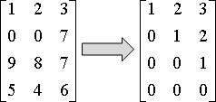
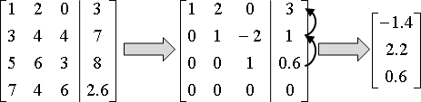
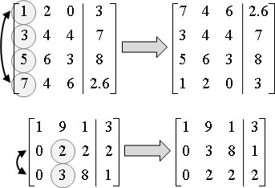
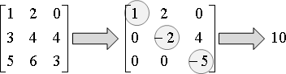
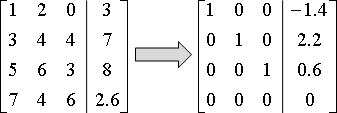
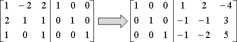

Matrix
程度★ 難度★★
矩陣
矩陣應該不必再介紹，各位在高中數學課都學過，大學線性代數課程也會教。
有兩種資料結構可以儲存一個矩陣，一種是使用陣列，另一種則是使用矩陣元素的位置列表。
矩陣資料結構：Array
建立一個二維陣列就可以當作矩陣。如果你喜歡的話，也可以用一維陣列當作矩陣，然後自己算索引值。
UVa 10855 11360 11149
矩陣資料結構：Sparse Matrix
就是把矩陣元素一個一個列出來，標明行與列。如果矩陣元素為零則不列出來，就這麼簡單。
Matrix Muliplication
程度★ 難度★★
Strassen's Algorithm
http://en.wikipedia.org/wiki/Strassen_algorithm
首先把兩個矩陣相乘，改成兩個一樣大的方陣相乘。把矩陣改成稍大的方陣，長寬是2的次方，多出來的元素全部補零。
原理是Divide and Conquer，欲相乘的兩個方陣，各自切割成四塊小方陣，然後利用小方陣的乘積，兜出大方陣的乘積。
僅是單純的拆成小方陣相乘，仍然需要8次乘法，以及4次加法，把遞迴公式列出來後，運用Master Theorem，可以求出時間複雜度為O(N^3)。根據遞迴公式，要讓時間複雜度變小，主要取決於乘法的次數，至於加法的次數不是主要影響因素。
經過一些詭異的調整方法，使用7次乘法，做些加加減減，就兜出了大方陣的乘積。時間複雜度變為O(N^log27)，實際取log一下，約為O(N^2.81)。
Virginia-Vassilevska-Williams Algorithm
http://www.cs.berkeley.edu/~virgi/matrixmult.pdf
當今世上最快的矩陣相乘演算法，時間複雜度為O(N^2.3727)。不過方法相當複雜，我也不懂。
矩陣相乘的速度究竟可以到達多快？
這是一個open problem，目前還沒有人知道答案的問題。
由於兩個方陣共有2*N^2個元素，光是讀取資料，這些元素不得不處理一次，所以時間複雜度的下界顯然是Ω(N^2)。據我所知，目前也尚未有人找出更高的下界。
至於上界就是剛剛提到的O(N^2.3727)。
Gaussian Elimination
程度★ 難度★★★
Gaussian Elimination
「高斯消去法」是把一個矩陣，化成對角線元素皆為一的上三角矩陣。
高斯消去法在高中數學課本、線性代數書籍都有介紹。主要用途是解聯立線性方程式、計算矩陣的determinant。
高斯消去法的過程大意是：按照字典順序窮舉一對一對的row，每窮舉出一對row，就處理這兩個row──求出首項係數的倍率，以上方row消去下方row，使下方row的首項係數變成零。
有一個特殊情況是，當上方row的首項係數是零的時候，就要考慮與下方row交換，讓上方row的首項係數盡量不是零。
這個交換row的動作稱做pivoting，不為零的那一個首項係數稱做pivot，包含pivot的那一個row稱做pivot row。
高斯消去法的過程，以row的角度來看，只有三種row運算：倍率、相減、交換。但是實作時，我們通常不會特地寫一個row的資料結構、定義這三種運算，因為程式結構太過複雜的話，程式執行速度也會變慢。實作時，通常是自己慢慢數索引值，小心的從二維陣列中取得元素，逐步完成row運算。
時間複雜度是O(N^2 * M)，N×M為矩陣的大小。由於一般情況都是討論方陣較多，N與M相等，所以會把時間複雜度寫成O(N^3)。
下面提供方陣的高斯消去法程式碼；至於一般矩陣的高斯消去法，就留給大家自行練習。
解聯立線性方程式
矩陣參數化、完成高斯消去法之後，使用Iterative Method，從最後一個row開始，把目前解出的未知數反覆代入到上一個row，求得每一個未知數。
這個計算過程，由於是從最後一個未知數開始計算，而不是從第一個未知數開始計算，故命名為「逆向代入（back substitution）」。逆向代入的時間複雜度是O(N^2)。
如果要讓逆向代入的誤差變小，可以在進行高斯消去法的時候，總是把首項係數絕對值最大的row，挪到最上方，再消去餘下的row。
UVa 10109 10524 10828 ICPC 3563
計算一個方陣的determinant
一個方陣進行高斯消去法，但是保留pivot row的原有倍率。最後的上三角矩陣，其對角線元素的乘積，便是determinant。
如果矩陣裡都是整數，那麼determinant也會是整數。要避免浮點數誤差，可以使用輾轉相除法進行消去。時間複雜度是O(N^3 * logC)，C是過程當中，絕對值最大的首項係數。
UVa 684
LUP Decomposition
「LUP分解」是利用高斯消去法，將一個方陣化為下三角矩陣L、上三角矩陣U、列交換矩陣P，三者的乘積。時間複雜度為O(N^3)。
有時候列交換矩陣P恰好等於單位矩陣I，而不需要把列交換矩陣P寫下來，此時「LUP分解」可簡單稱作「LU分解」。
http://ccjou.wordpress.com/2010/09/01/
LUP分解的用途是解聯立線性方程式Ax = b，當A固定，b有許多組要解，每次求解僅需時O(N^2)。若是單純的使用高斯消去法，針對每一組不同的b，每次求解皆需時O(N^3)。
一、row交換矩陣，調換參數向量的維度順序。 二、下三角矩陣，順向代入（forward substitution）。 三、上三角矩陣，逆向代入（back substitution）。
筆者線性代數學得不好，不敢多說。詳情請參考線性代數課本。
Gauss-Jordan Elimination
高斯消去法的延伸版本。矩陣參數化，把原矩陣的對角線化成一、其餘元素化為零。

用途是解聯立線性方程式、計算逆矩陣。時間複雜度與高斯消去法相同，仍是O(N^3)。
解聯立線性方程式，論效率，高斯消去法是比較好的選擇：高斯消去法暨逆向代入的總步驟數，比高斯喬登消去法還要少。論程式碼長度，高斯喬登消去法是比較好的選擇：只消修改一下高斯消去法的消去範圍，即可得到解，而不必逆向代入。
Linear Transformation
程度★ 難度★
Linear Transformation
【註：想要詳細了解線性變換，建議修習資工系線性代數課程。以下只做簡介。】
一個函數，由變數的加減法、變數的倍率所組成，稱作「線性變換」。小心，不是「線性函數」喔，因為此詞彙已被古人當作是長相為直線的函數！
f(x,y,z) = 1 x + 2 y - 5 z
f(x) = 1 x + 2 x^2 - 5 x^3 把 x^2 與 x^3 重新看作是變數 y 和 z，整個看起來也是線性變換。 至於什麼樣的變數組合，才可以重新看作是線性變換的變數呢？ 讀者可以研讀線性代數的線性空間、正交基底等等概念。
Linear Transformation v.s. Matrix
只要是線性變換，都可以寫成矩陣乘法的格式！
[ x ]
f(x,y,z) = [ 1 2 -5 ] * [ y ]
[ z ]
通常會把各個變數改名成 x1 x2 x3 ...
所有輸入變數拼在一起，成為一個向量 x
輸出變數叫做 y
[ x1 ]
y = [ 1 2 -5 ] * [ x2 ]
[ x3 ]
y = f ( x )
一般提到函數，輸入可以是多重變數，但是輸出一定是單一變數。一般提到線性變換，有了矩陣相助，輸入與輸出都可以是多重變數。
[ y1 ] [ 1 2 -5 ] [ x1 ] [ y2 ] = [ 2 4 6 ] * [ x2 ] [ y3 ] [ 3 1 7 ] [ x3 ] y = f ( x )
約定俗成，我們會把x與y排列成向量，而非矩陣。如此一來，只要知道了線性變換的矩陣，就完全知道了函數式子。
輸出變數、輸入變數排列成矩陣：
[ y1 y3 ] [ 1 2 -5 ] [ x1 x4 ]
[ y2 y4 ] = [ 2 4 6 ] * [ x2 x5 ]
[ x3 x6 ]
y = f ( x )
輸出變數、輸入變數排列成向量：
[ x1 ]
[ y1 ] [ 1 2 -5 0 0 0 ] [ x2 ]
[ y2 ] = [ 2 4 6 0 0 0 ] * [ x3 ]
[ y3 ] [ 0 0 0 1 2 -5 ] [ x4 ]
[ y4 ] [ 0 0 0 2 4 6 ] [ x5 ]
[ x6 ]
y = f ( x )
Linear Transformation v.s. Computer
電腦的主要功能，就是加減乘除運算，正好可以對應線性變換的定義──也就是說，電腦可以飛快的完成線性變換！
計算機科學的應用領域，幾乎是全部，傾向將真實問題故意寫成線性變換的模樣，為的就是飛快的計算。
最佳化問題（尤其是圖論）當中，能夠表示成線性變換的問題，通常都是P問題；無法表示成線性變換的問題，絕大部分成為了NP-Complete問題。
矩陣對於計算學的重要性可見一斑！
Companion Matrix
程度★ 難度★★★
Companion Matrix
線性的函數（線性變換）可以用矩陣表示，而線性的遞迴函數也可以用矩陣表示，該矩陣稱為Companion Matrix。
數列的第N項，化作矩陣的N次方。矩陣的N次方，只要用O(logN)次矩陣乘法就能求得，原理是Divide and Conquer，請參考「Fast Exponentiation」。
1.
recurrence:
f(n) = p * f(n-1) + q * f(n-2) + r * f(n-3)
f(2) = 2
f(1) = 1
f(0) = 0
another style:
f(0) = 0
f(1) = 1
f(2) = 2
a * f(n) + b * f(n+1) + c * f(n+2) = f(n+3)
2.
[ f(0) ] [ 0 ] [ f(n) ] [ 0 1 0 ]
F0 = [ f(1) ] = [ 1 ] Fn = [ f(n+1) ] A = [ 0 0 1 ]
[ f(2) ] [ 2 ] , [ f(n+2) ] , [ a b c ]
[ 0 1 0 ] [ f(0) ]
A * F0 = [ 0 0 1 ] * [ f(1) ]
[ a b c ] [ f(2) ]
[ 0 + 1*f(1) + 0 ] [ f(1) ]
= [ 0 + 0 + 1*f(2) ] = [ f(2) ] = F1
[ a*f(0) + b*f(1) + c*f(2) ] [ f(3) ]
重點在於最後一橫列。其他只是簡單位移。
A就是Companion Matrix。
3.
F1 = A * F0 = A^1 * F0
F2 = A * F1 = A^2 * F0
⋮ ⋮ ⋮
Fn = A * Fn-1 = A^(n-1) * F0
4.
[ f(f-2) ]
Fn-3+1 = [ f(f-1) ] = A^(n-3) * F0
[ f(n) ]
^^^^ here is f(n)!
仔細來說，數列的第N項，只要用O(log(N-M))次矩陣乘法就能求得。M是線性遞迴函數的次元數，也是Companion Matrix的長與寬。
做個結論。當線性遞迴函數為M次元，想計算數列的第N項時，有兩種計算方式：
一、Dynamic Programming：算出第一項到第N項，由小到大一項一項計算，答案儲存於表格。時間複雜度為O(N + (N-M) * M)。
二、Companion Matrix：只能算出第N項，利用Divide and Conquer計算矩陣次方。時間複雜度為O(log(N-M) * M^3 + M^2)；此處設定矩陣相乘是O(M^3)，矩陣相乘還可以更快。
當M是常數時，時間複雜度會更美麗，一為O(N)，二為O(logN)。
此手法的精髓，是將資料以不同型態呈現。轉換數域後，利用新數域的特性，讓計算方式變得更簡潔，快速求得答案。影像處理的Hough transform也是一個好例子。
當遇到一個難纏的問題，不妨換換思考角度，以不同面向來看待資料，或許能找到不錯的新方法。
UVa 10518 10655 10743 10754 10870
Toeplitz Matrix
程度★★ 難度★★
Toeplitz Matrix（Diagonal-constant Matrix）
每一條左上右下斜線，都是同一個元素的矩陣。
[ 1 5 3 2 1 ] [ 2 1 5 3 2 ] [ 7 2 1 5 3 ] [ 4 7 2 1 5 ] [ 8 4 7 2 1 ]
2N-1個數字就能紀錄一個Toeplitz Matrix。兩個Toeplitz Matrix矩陣相加需時O(N)，相乘需時O(N^2)。
矩陣乘法
關於循環摺積請見本站另一篇文章「Convolution」。
循環摺積是線性變換，其矩陣是循環的Toeplitz Matrix。
對於普通的Toeplitz Matrix，只要填充元素成為循環的Toeplitz Matrix，就能化做循環摺積，就能套用傅立葉轉換計算循環摺積。
[ 1 5 3 7 2 ]
[ 1 5 3 ] [ 2 1 5 3 7 ]
[ 2 1 5 ] ---> [ 7 2 1 5 3 ]
[ 7 2 1 ] [ 3 7 2 1 5 ]
[ 5 3 7 2 1 ]
一個N×N Toeplitz Matrix乘以一個N×1向量，時間複雜度為O(NlogN)；乘以一個N×M矩陣、也就是乘以M個1×N向量，時間複雜度為O(M * NlogN)。
解聯立線性方程式（Levinson-Durbin Algorithm）
時間複雜度O(N^2)，比高斯消去法O(N^3)來得快。
【待補程式碼】
Integer Relation
程度★★ 難度★★